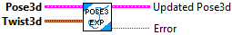
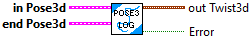
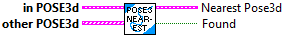
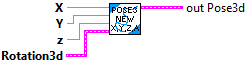
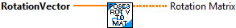
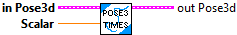
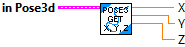

Divide the pose by the given scalar and returns the new pose3d.
Parameters:
- IN POSE3D - The input POSE data structure
- Scalar - The value to divide the pose by.
Return:
- OUT POSE3D - The output pose.

Checks equality between this Pose3d and another Pose3d.
Parameters:
- this Pose3d - This POSE3D data structure
- other POSE3d - The other POSE23 data structure
Returns:
- Equals - Value will be TRUE if both POSEs are the same

Obtain a new Pose3d from a (constant curvature) velocity.
The twist is a change in pose in the robot's coordinate frame since the previous pose update. When the user runs exp() on the previous known field-relative pose with the argument being the twist, the user will receive the new field-relative pose.
"Exp" represents the pose exponential, which is solving a differential equation moving the pose forward in time. Obtain a new Pose2d from a (constant curvature) velocity.
PARAMETERS:
--------------
- POSE3D - current POSE data structure
- TWIST 3D- TThe change in pose in the robot's coordinate frame since the previous pose update. For example, if a non-holonomic robot moves forward 0.01 meters and changes angle by 0.5 degrees since the previous pose update, the twist would be Twist3d(0.01, 0.0, 0.0, new new Rotation3d(0.0, 0.0, Units.degreesToRadians(0.5))).
RETURNS:
-----------
- OUT POSE3D - The new pose of the robot.
- Error -- boolean -- If TRUE, an error occured.

Interpolate between 2 poses
Parameter:
- IN POSE3D - Current POSE data structure
- EndValue POSE3D -- The end value POSE..
- T -- Value between 0 and 1.
Returns:
- Interpolated POSE3D - The interpolated POSE.

Returns a Twist3d that maps this pose to the end pose. If c is the output of a.Log(b), then a.Exp(c) would yield b.
Parmeters:
- IN POSE3D - The current POSE data structure
- OTHER POSE3D - The end pose for the transformation.
Returns:
- OUT TWIST3D - The twist that maps this to end.
- Error -- boolean -- If value is TRUE, an error occured.

Returns the Transform3d that maps the one pose to another.
Parameter:
- IN POSE3D - Current POSE data structure
- OTHER POSE3D - The initial pose of the transformation.
Returns:
- OUT TRANSFORM3D - The transform that maps the other pose to the current pose.

Returns the nearest Pose3d from a list of poses. If two or more poses in the list have the same distance from this pose, return the one with the closest rotation component.
Parameter:
- IN POSE -- Pose3d -- The pose to compare against the OTHER POSES to find the closest pose.
- OTHER POSE S -- Pose3d array -- The list of poses to search for the closest pose.
Returns:
- Nearest Pose -- Pose3d -- The pose closest to IN POSE.
- Found -- boolean -- True if a POSE was found. This should only be fasle if the Other Pose array is empty.

Constructs a pose with x, y, and z translations instead of a separate Translation3d.
Parameters:
- X- The x component of the translational component of the pose.
- Y - The y component of the translational component of the pose.
- Z - The z component of the translational component of the pose.
- Rotation3d - The rotational component of the pose.
Returns:
- OUT POSE3D - Output POSE3D

Constructs a pose at the origin facing toward the positive X axis.
Parameters:
-- none --
Return:
- POSE3d - Pose3d data structure

Constructs a 3D pose from a 2D pose in the X-Y plane
Parameters:
- in Pose2 -- Pose 2d in the X-Y plane to convert to Pose 3D.
Returns:
- OUT POSE3D - Output POSE3D

Constructs a pose with the specified translation and rotation.
Parameters:
- translation - The translational component of the pose.
- rotation - The rotational component of the pose.
Return:
- POSE3D - Pose data structure

Transforms the pose by the given transformation and returns the new transformed pose. "plus" is the same as "transformBy"
Parameters:
- IN POSE3D - The input POSE data structure
- OTHER TRANSFORM3D - The transform to transform the pose by.
Return:
- OUT POSE3D - The transformed pose.

Returns the other pose relative to the current pose.
This function can often be used for trajectory tracking or pose stabilization algorithms to get the error between the reference and the current pose.
Parameters:
- IN POSE3D - The POSE data structure
- OTHER POSE3D - The pose that is the origin of the new coordinate frame that the current pose will be converted into.
Return:
- OUT POSE3D - The current pose relative to the new origin pose.

Applies the hat operator to a rotation vector.
It takes a rotation vector and returns the corresponding matrix representation of the Lie algebra element (a 3x3 rotation matrix).
Parameters:
- RotationVector -- rotation The rotation vector.
Return:
- RotationMatrix -- The rotation vector as a 3x3 rotation matrix.

Multiply the pose by the given scalar and returns the new pose3d.
Parameters:
- IN POSE3D - The input POSE data structure
- Scalar - The value to multiply the pose by.
Return:
- OUT POSE3D - The output pose.

Returns a Pose2d representing this Pose3d projected into the X-Y plane.
Parameter:
- IN POSE3D - Current POSE data structure
Returns:
- out POSE2D - A Pose2d representing this Pose3d projected into the X-Y plane.

Transforms the pose by the given transformation and returns the new transformed pose. "plus" is the same as "transformBy"
Parameters:
- IN POSE3D - The input POSE data structure
- OTHER TRANSFORM3D - The transform to transform the pose by.
Return:
- OUT POSE3D - The transformed pose.

Returns the rotational component of the transformation.
Parmeters:
- IN POSE3D -- Input POSE data structure
RETURNS:
- out ROTATION3D - The rotational component of the pose.

Returns the translation component of the transformation.
Parmeters:
- IN POSE3D - The POSE data structure
RETURNS:
- OUT TRANSLATION3D - The translational component of the pose.

Returns the X, Y, Z elements of the translation component of the transformation.
Parmeters:
- IN POSE3D - The POSE data structure
RETURNS:
- X - The X element of the translational component of the pose.
- Y - The Y element of the translational component of the pose.
- Z - The Z element of the translational component of the pose.